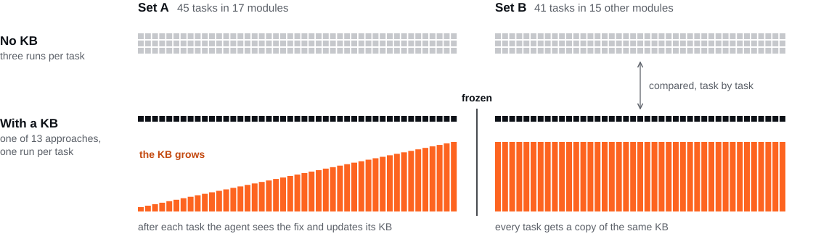
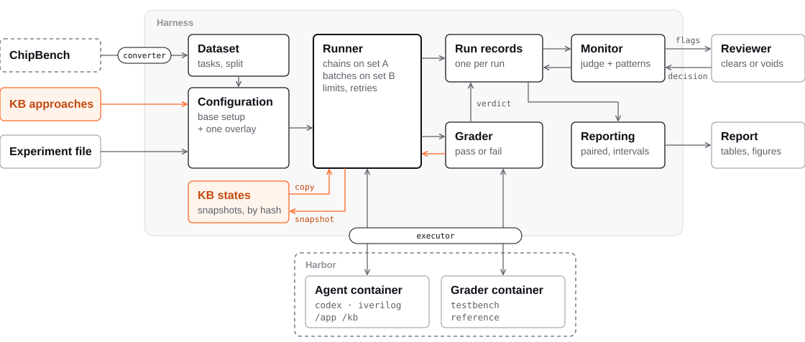
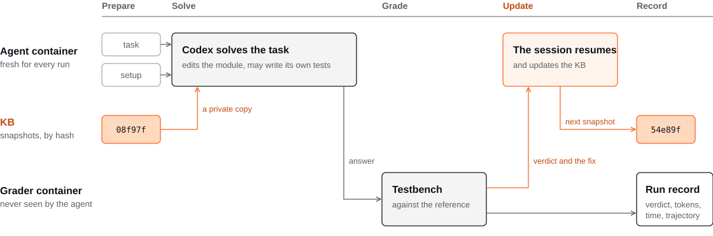
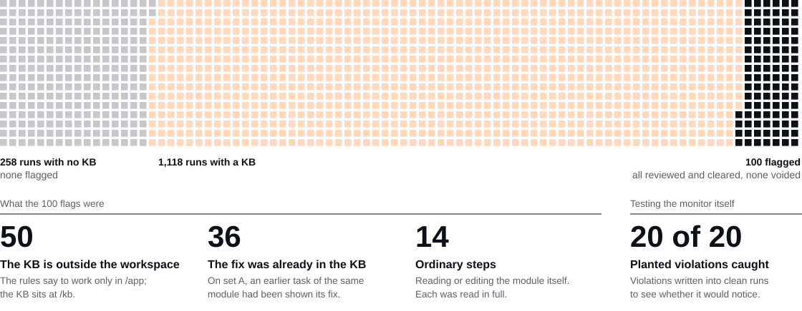
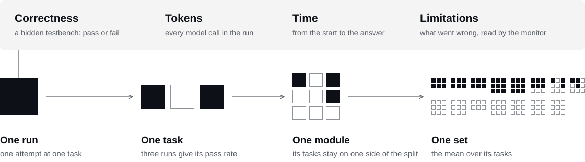
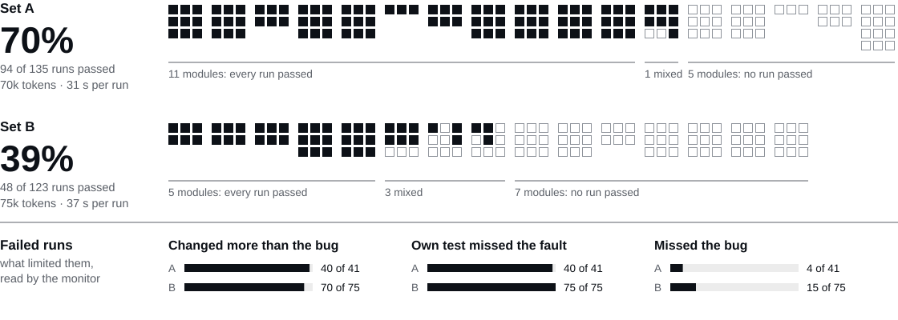
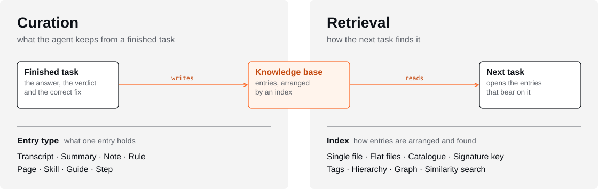
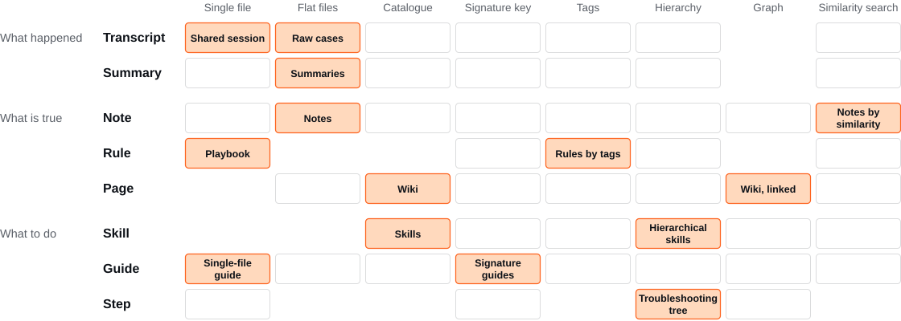
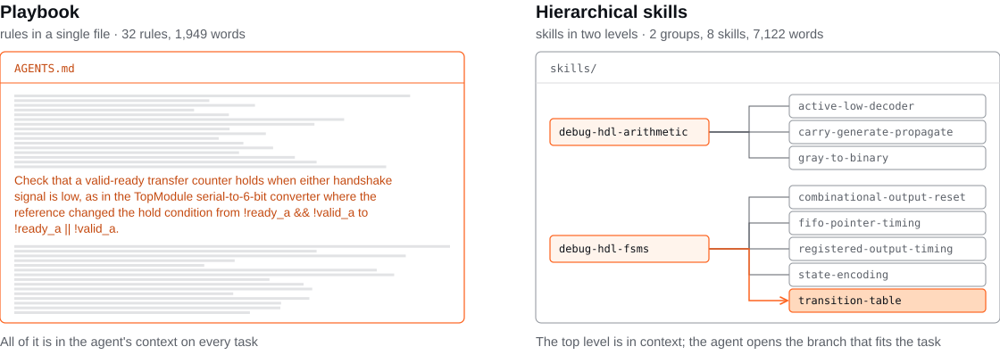
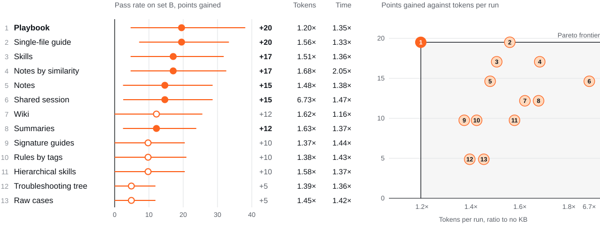

Thirteen ways to keep what a debugging agent learns, built on one set of ChipBench tasks and tested on another.
Runs Codex on ChipBench debugging tasks in a fresh container, and grades each answer in a second one.
86 tasks · 1,376 certified runsNo KB, three runs per task. The agent finds the bug, rewrites past it, and its own test still passes.
70% on set A · 39% on set BThirteen designs, each an entry type and an index, written by the agent over set A and then frozen.
13 of 51 designs runEvery KB raised the pass rate on unseen modules and none made a task worse. One build each cannot rank them.
+5 to +20 points on set B01




02


03

/kb. The harness writes nothing in the KB.

04

Report, code, runs and trajectories: github.com/attila-palabiyik/rca-kb